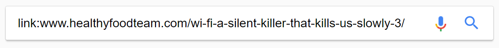

Evaluating credibility
The URL
Authority
Timeliness
Sources
Links to the page
Purpose
Evaluating credibility of online sources
The URL

The URL
- What does the domain tell you about the website?
- What does the top-level domain tell you?
- Is it a personal page: Does the URL contain the person’s name?
- Does the URL contain a date?
Authority
- Who is the author?
- On which website was the page published?
- Does the design of the page and site look professional?
- Does the article give contact information for the author?
- Is there a link that gives you more information about the author?
- Can you find an "About us" (or similar) page on the site?
- What can a quick Google search tell you about the author and publisher?
- Finally, evaluate how trustworthy the author and publisher are for the present topic
Timeliness
- Look for a publication date
- If not date is supplied, did the URL contain a date?
- How relevant is the page today or to the topic at hand?
- Has anything of relevance changed since the page’s publication date?
Sources
- How are sources used?
- Are there links or references to other sources?
- Do these sources agree with the page you are evaluating? Has anything been altered?
Links to the page
What can evaluating the sites that link to the page or website tell us about it?
Direct links to the page
Copy the URL of the page and/or the website, and use a "link:URL" search string on Google:

Skim the SERP (search engine results page)
- What do the titles, URLs, and snippets tell you about the sites linking to the page/site you are evaluating?
- Are many of the results from the website itself or its social media accounts?
- Are there signs of an ”echo chamber”?
- What does that tell you about the page/site itself?
Informational links to the page
In addition to searching for direct links to the page or site you are evaluating, what does a Google search for the following elements tell you about the page or site?
- The title of the page
- The title of the website
- Keywords, quotes, names, and/or evidence from the page
Purpose
- What is the purpose of the page?
- What is the purpose of the site itself?
- What is the main point of the page you are evaluating? Look at the headline.
- Does the page or site use clickbait?
- Does the page use a lot of ads? What does this tell you about the purpose of the site and the page?
Overall evaluation
- Review all of the information you have gathered
- Do you believe the source to be credible? Why(not)?